|
|
| crinoids text index | photo index |
| Phylum Echinodermata > Class Crinoidea > Order Ophiuroidea |
| Basket
star Awaiting identification Family Euryalidae updated Apr 2020 Where seen? This intricate lace-like animals is sometimes seen in the intertidal zone on some of our shores. Small ones seen clinging to seagrasses, larger ones among coral rubble or wrapped around sea fans. Features: About 10cm in diameter with arms. Each arm branched into coiling 'tendrils' that are highly flexible. These eventually form a complex basket-like tangle that is used to filter feed in the water. Each 'tendril' may be tipped with a conical structure. Mouth on the underside. Some produced a great deal of slime when handled. |
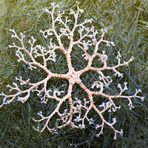 Sisters Island, Jan 12 |
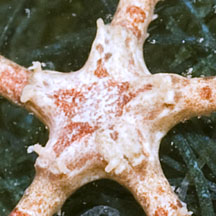 Upper side. |
|
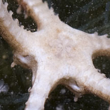 Underside. |
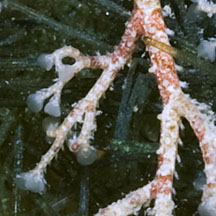 Conical structures at the end of tendrils. |
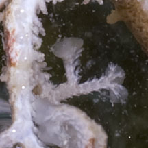 |
| Baskets at home: According to David Lane, juveniles are often found on sea fans, while
adults are typically found under large corals and crevices during
the day, but at night climb up to an elevated point to unfurl their
arms into the current. Status and threats: Euryale aspersa is the only species of basket star is so far listed for Singapore. It is listed as "DD: EN? Data deficient, possibly Endangered" in the Red List of threatened animals. |
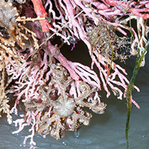 On a sea fan growing on a jetty leg. 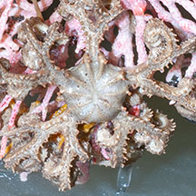 Beting Bronok, Jul 13. |
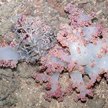 On a Flowery soft coral. 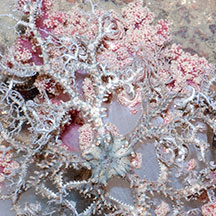 Beting Bronok, Jul 13. |
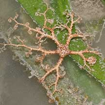 On seagrass. 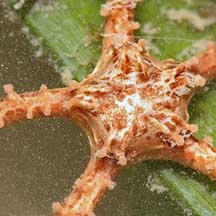 Pulau Hantu, Nov 09 Photo shared by James Koh on his blog. |
| Basket stars on Singapore shores |
On wildsingapore
flickr
|
| Other sightings on Singapore shores |
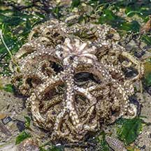 Changi CP7, Jan 21 |
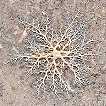 Beting Bronok, Jun 18 |
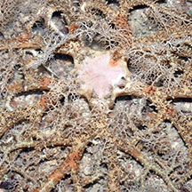 |
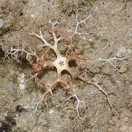 Pulau Hantu, Nov 09 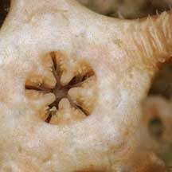 The underside. |
| Filmed on Beting
Bronok Jun 10 Basket star (Family Euryalidae) from Loh Kok Sheng on Vimeo. |
Links
References
|